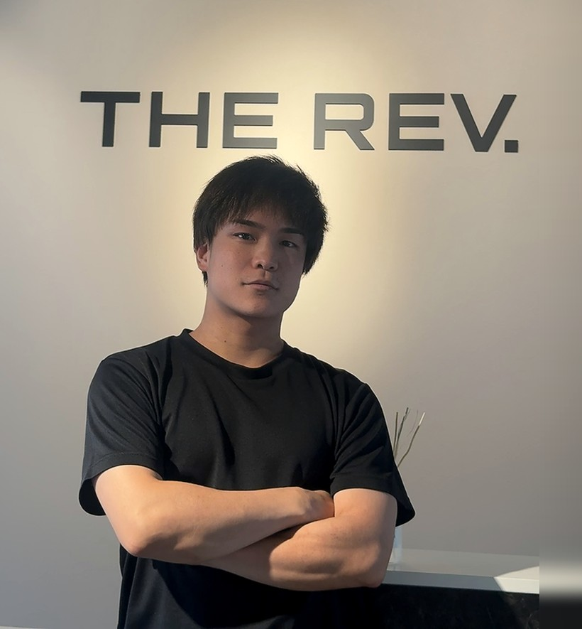
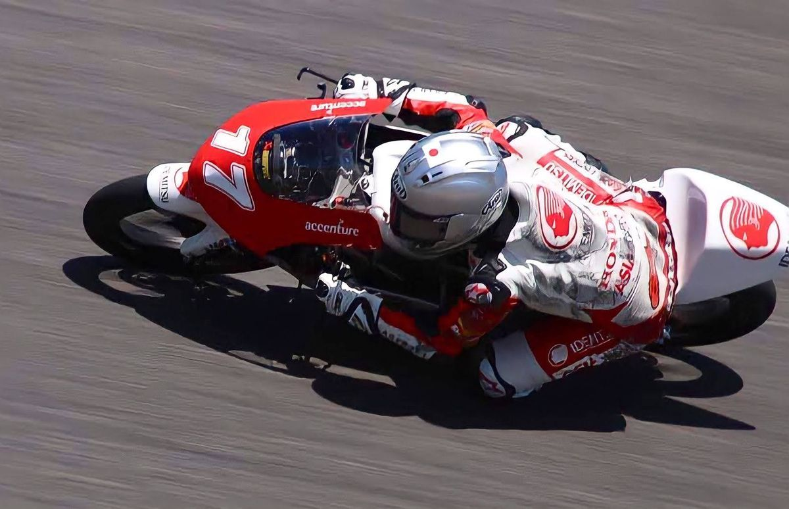
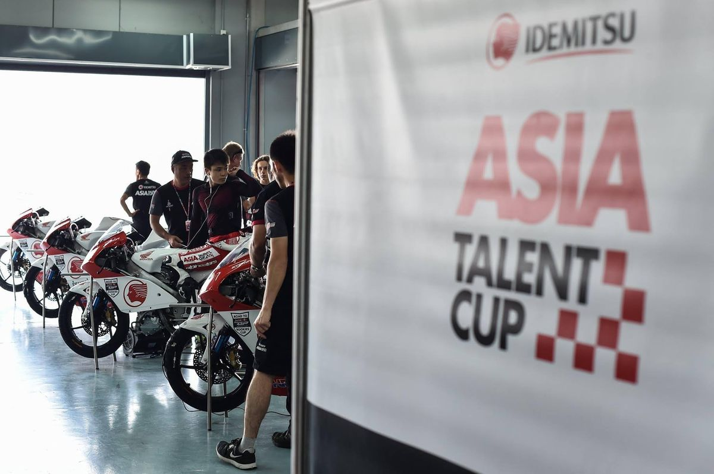
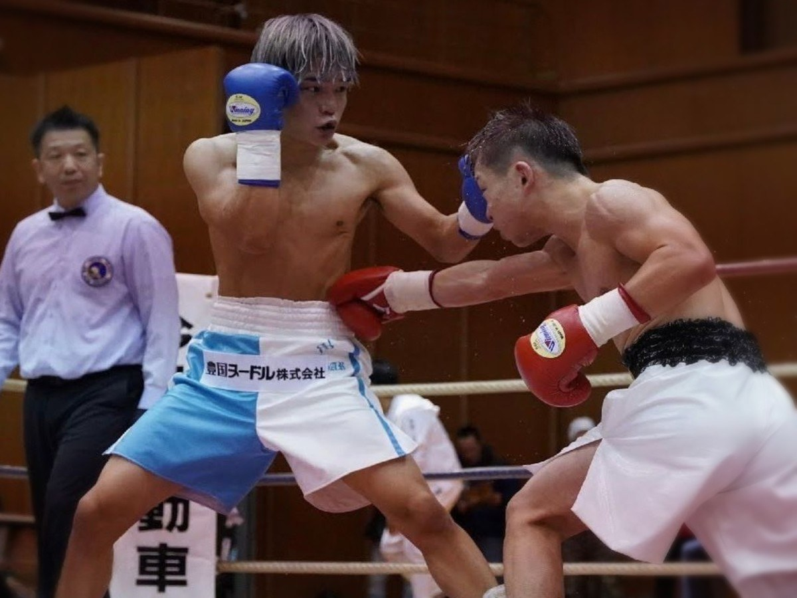
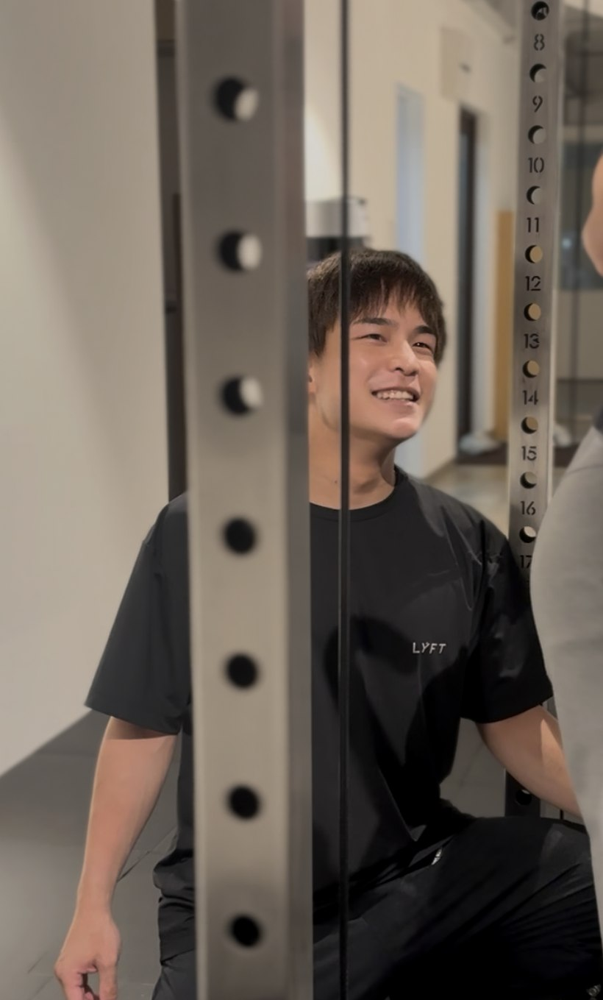

Trainer
追い込むだけが、
正解ではない。
競技で培った判断を、
目の前の一人のために。

Representative Trainer
服部 真騎士
Makishi Hattori
二輪ロードレース / プロボクシング / パーソナルトレーニング
累計 約5,000セッション代表トレーナー個人の指導実績My approach
競技から、指導へ。頑張ることだけでは、
結果につながらない。
ロードレースでも、ボクシングでも、自分自身かなり身体を追い込みながら結果を求めてきました。
でも、追い込めば結果が出るのであれば、同じように必死で練習している選手はみんな勝てるはずです。
実際には、そうではありませんでした。
大切なのは、
何をやるのか。どうやるのか。
その日の状態でどこまでやるのか。
必要な時にはしっかり負荷をかける。
でも、頑張らせること自体を目的にはしない。
一人ひとりを見ながら、その人に今必要なことを考える。
それが、今の指導で大切にしていることです。
02 Motorsports
状態を見て、
必要なことを判断する。

ロードレースは、怖さを我慢してアクセルを開ければ速くなる競技ではありません。
身体の使い方、疲労、集中力、マシン、その日の状態。その都度、どこまで行くのか、何を変えるのかを判断する。
メニューよりも、
今の動きと疲労を見る。
今のパーソナルトレーニングでも、決めたメニューをただ実行するのではなく、動きや疲労を見ながら内容を変えるという考え方につながっています。

国内のサーキットから、アジアの国際育成シリーズへ。異なる環境の中で、判断を重ねてきました。
03 Professional Boxing
自分にできた方法を、
そのまま人に押しつけない。

自分自身、競技では厳しい練習や減量を経験してきました。
でも、自分が耐えられた方法だからといって、それがすべての人に合うわけではありません。
「まだいける」と判断することも、
「今日はここまででいい」と判断することも。
どちらもトレーナーの役割だと考えています。努力すること自体を目的にせず、その人に必要な強度を選ぶ。それが、競技経験から今の指導へ持ち込んでいる考え方です。
競技実績あくまで、指導の背景にある経験です。
- 2017インターハイ ピン級 ベスト8
- 2022西日本ミニマム級新人王トーナメント 決勝進出
- 2021–24プロ通算 10戦 3勝（2KO/TKO）6敗1分
04 Personal Training
同じ人でも、
毎回同じ状態ではない。
累計 約
5,000
SESSIONS
代表トレーナー個人の
累計指導セッション
競技と並行してパーソナルトレーナーとして経験を積み、これまで累計約5,000セッションを担当してきました。
同じ目的でも、同じ身体の人はいません。
そして、同じ人でも、仕事、睡眠、疲労、体調によって毎回状態は変わります。
だから、決められたメニューを最後までこなすことよりも、その日に必要な内容を考えることを大切にしています。
Coaching Philosophy
一人ひとりを見ながら、
その人に今必要なことを
考える。

- 01
Purpose
目的を見る。
何を変えたいのか。
どんな自分でいたいのか。
まずは、その思いを聞く。 - 02
Condition
その日の状態を見る。
仕事、睡眠、疲労、体調。
今日の身体に、
無理のない入口を探す。 - 03
Movement
動きを見る。
実際に動いてもらい、
フォームや身体の使い方から、
必要なことを考える。 - 04
Load
必要な負荷を選ぶ。
しっかり頑張る日も、
内容を調整する日も。
その人に必要な強度を選ぶ。
鍛える時間の、その先まで。THE REV.では、トレーニング後のリカバリーも身体づくりの一部と考えています。リカバリーへの考え方を見る
3歳のポケットバイクから、アジアのサーキット、プロボクシングのリング、そして今の指導まで。
年表をひらく年表をとじる2002 — 2026
2002–03頃
ポケットバイクとの出会い
3歳頃から、父親の影響でバイクに乗り始める。
2015
国内レースと、高校ボクシング
KTM RCカップに参戦し、オートポリス開幕戦でクラス優勝。あわせて高校のボクシング部に所属。
2016
スズキ・アジアン・チャレンジ
正規メンバーに選出。鈴鹿ラウンド第1レースで3位表彰台。
2017
アジアのサーキット、全国のリング
出光アジア・タレント・カップで、タイ・カタール・鈴鹿の3戦に参戦。同年、インターハイ ピン級ベスト8。
2018–19頃
競技職への挑戦
オートレーサー試験は3次試験、ボートレーサー養成所試験は最終試験まで。いずれも合格には届かなかった。
2019
もてぎST150 優勝
第2戦をポールポジションから優勝。同年12月、プロ加盟のボクシングジムへ入会。
2021
プロボクサーとしてデビュー
4月、奈良のジム所属でプロデビュー。競技と並行してパーソナルトレーナーとして勤務。
2022
西日本新人王 決勝進出
西日本ミニマム級新人王トーナメント決勝へ。プロ通算戦績は10戦3勝（2KO/TKO）6敗1分。
20267月
THE REV. CONDITIONING LAB.
奈良市・新大宮で代表トレーナーとして活動開始。一人ひとりの目的と状態に合わせた指導へ。